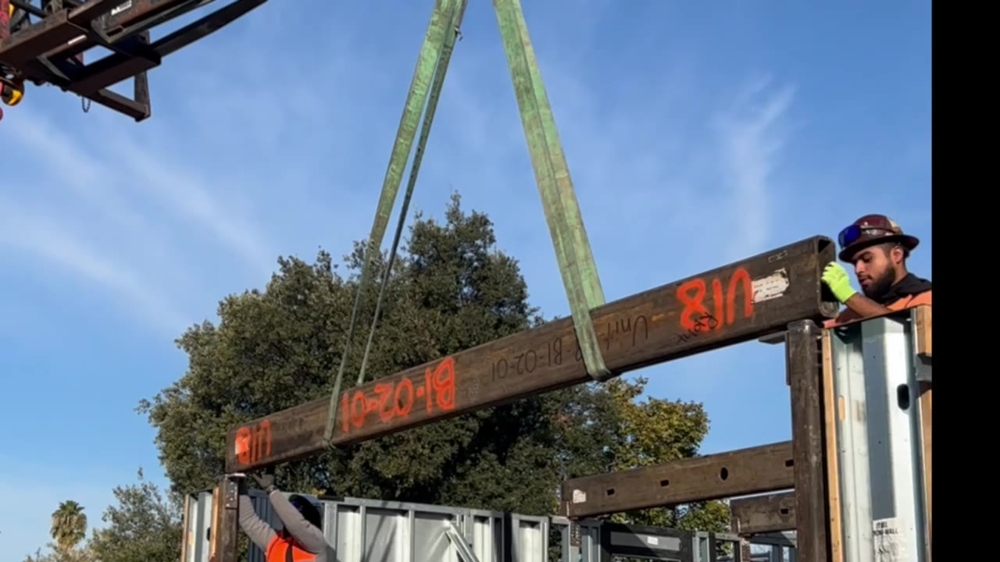

01
Mobile Welding
On-site welding for homes, commercial properties, contractors, trailers, shops, yards, and field repairs.
- Job-site repair welding
- Steel and metal assemblies
- Bay Area mobile service

Mobile and Shop Welding - Hayward, CA
Production Welding handles mobile welding and shop work for repair welding, gates, railings, trailers, equipment, custom brackets, and fabrication across the Bay Area.
Built Around Real Welding Needs
For fixed gates, railings, trailers, equipment, and job-site repairs, send the location, photos, and project details so Production Welding can review the work before scheduling the visit.
Parts, brackets, gates, rail sections, and metal assemblies can be handled as shop work when that is the better fit. The shop address stays private, so call or send photos first.
Production Welding serves Bay Area homes, businesses, contractors, yards, trailers, shop projects, and job sites from a Hayward base.
Services
On-site welding for homes, commercial properties, contractors, trailers, shops, yards, and field repairs.
Shop-based welding and fabrication for parts, brackets, gates, rails, repairs, and metal assemblies that are better handled off site.
Welding support for gate frames, hinges, handrails, stair rails, posts, brackets, and access points.
Practical weld repairs for trailers, utility equipment, metal brackets, cracked components, and broken assemblies.
Small fabrication, field fitting, custom brackets, reinforcement plates, and metal details built around the project.
Recent Work
A quick look at Production Welding projects including railings, gates, roof steel, trailer work, flatbeds, and boat repair.

Welded exterior stair rails, balcony guards, posts, and metal connections.

Custom gate welding, hinge work, frames, and entry metalwork.

Custom fabricated roof steel structure with welded beams, framing, and support connections.

Custom fabricated trailer extension that raised the dump trailer walls for more hauling capacity.

Custom fabricated flatbed truck body with welded steel framing, storage, and deck details.

Boat repair welding and custom metal repair completed with mobile welding support.
Bay Area Service
Production Welding covers East Bay, Peninsula, South Bay, nearby job sites, and shop work. Open a city page below to confirm local welding service for that area.
See all service areasCustomer Reviews
"It was a pleasure to work with Ismael on my project. I designed a center support pole for a set of circular stairs that required flanges placed with considerable precision and welded in place. I was totally satisfied with the finished product; it more than met my expectations and made the construction of the stairs very easy."
"Needed a welding job done on short notice and this business was able to accommodate me. They did a fantastic job!"
"Used the welder and was amazed by the quality of work and friendly service. Mine did the job perfectly I highly recommend them for all your welding needs! thank you."
Common Questions
Production Welding handles mobile welding and shop work, but the shop address is not published for walk-in traffic. Call or send photos first so the work can be reviewed properly.
Production Welding serves the Bay Area from Hayward, including Hayward, Oakland, San Jose, San Francisco, Alameda, Berkeley, San Mateo, South San Francisco, Fremont, and nearby communities.
Yes. Production Welding is led by a certified and insured welder.
Common work includes mobile welding, shop welding, weld repair, gate welding, railing welding, trailer repair, equipment repair, custom brackets, and small fabrication.
Get a Welding Estimate
Call Production Welding or send the project details, location, photos, and timing. Mobile service and shop work are available across the Bay Area.